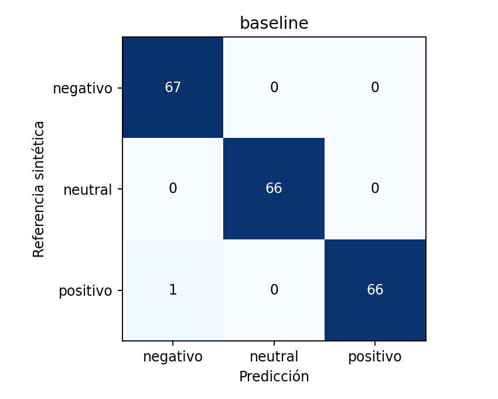

Elvis Max Estela Paucar · T6 · Grupo A
Corpus sintético de prueba. No valida pacientes reales. BETO: ejecutado
Accuracy 0.9950 · Macro-F1 0.9950
| precision | recall | f1-score | support | |
|---|---|---|---|---|
| negativo | 0.9853 | 1.0000 | 0.9926 | 67.000 |
| neutral | 1.0000 | 1.0000 | 1.0000 | 66.000 |
| positivo | 1.0000 | 0.9851 | 0.9925 | 67.000 |
| accuracy | 0.9950 | 0.9950 | 0.9950 | 0.995 |
| macro avg | 0.9951 | 0.9950 | 0.9950 | 200.000 |
| weighted avg | 0.9951 | 0.9950 | 0.9950 | 200.000 |

Accuracy 1.0000 · Macro-F1 1.0000
| precision | recall | f1-score | support | |
|---|---|---|---|---|
| negativo | 1.0 | 1.0 | 1.0 | 67.0 |
| neutral | 1.0 | 1.0 | 1.0 | 66.0 |
| positivo | 1.0 | 1.0 | 1.0 | 67.0 |
| accuracy | 1.0 | 1.0 | 1.0 | 1.0 |
| macro avg | 1.0 | 1.0 | 1.0 | 200.0 |
| weighted avg | 1.0 | 1.0 | 1.0 | 200.0 |
{
"delta_f1": 0.00497540146662967,
"ic95_grupos": [
0.0,
0.015982122097996508
],
"replicas": 1000,
"mcnemar_p": 1.0,
"b": 0,
"c": 1,
"limite": "Sintético. McNemar supone independencia entre casos; no garantizada. No prueba eficacia clínica."
}Las etiquetas no tienen validación humana. Puede persistir semejanza entre plantillas.